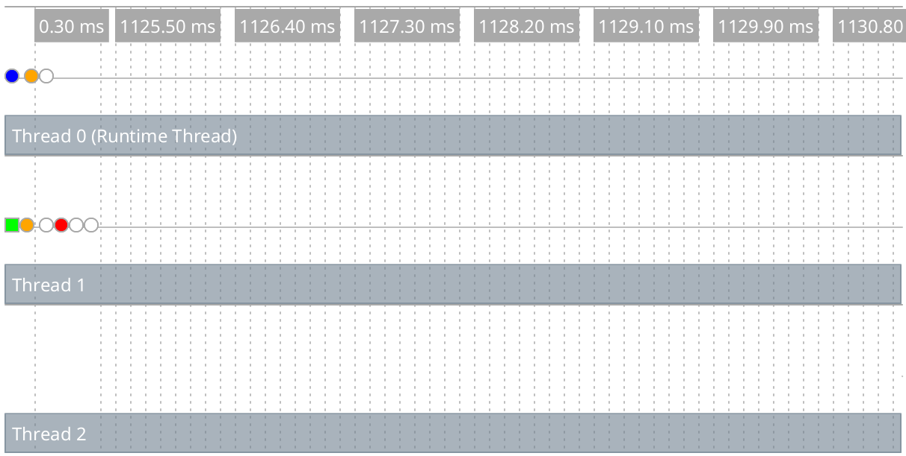
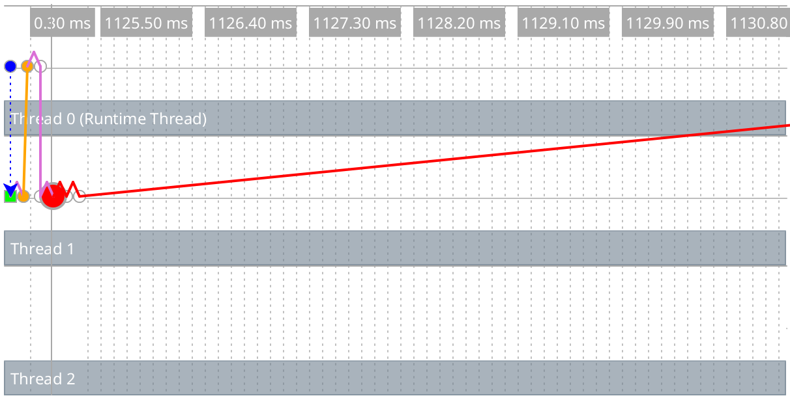
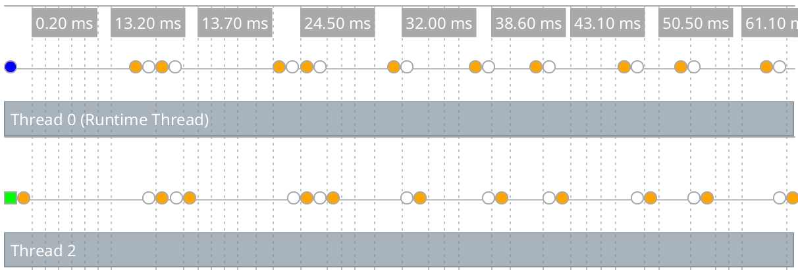
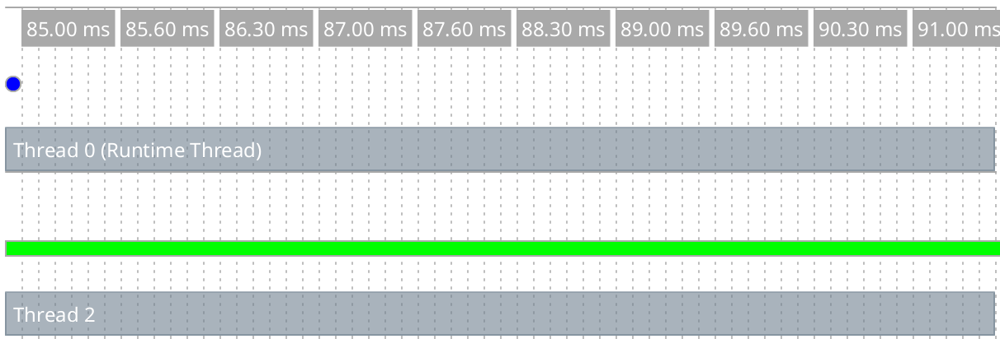

20 Parallelism
Racket provides two forms of parallelism: futures and places. On a platform that provides multiple processors, parallelism can improve the run-time performance of a program.
See also Performance for information on sequential performance in Racket. Racket also provides threads for concurrency, but threads do not provide parallelism; see Concurrency and Synchronization for more information.
20.1 Parallelism with Futures
The racket/future library provides support for performance improvement through parallelism with futures and the future and touch functions. The level of parallelism available from those constructs, however, is limited by several factors, and the current implementation is best suited to numerical tasks. The caveats in Performance in DrRacket also apply to futures; notably, the debugging instrumentation currently defeats futures.
Other functions, such as thread, support the creation of reliably concurrent tasks. However, threads never run truly in parallel, even if the hardware and operating system support parallelism.
As a starting example, the any-double? function below takes a list of numbers and determines whether any number in the list has a double that is also in the list:
(define (any-double? l) (for/or ([i (in-list l)]) (for/or ([i2 (in-list l)]) (= i2 (* 2 i)))))
This function runs in quadratic time, so it can take a long time (on the order of a second) on large lists like l1 and l2:
(define l1 (for/list ([i (in-range 5000)]) (+ (* 2 i) 1))) (define l2 (for/list ([i (in-range 5000)]) (- (* 2 i) 1))) (or (any-double? l1) (any-double? l2))
The best way to speed up any-double? is to use a different algorithm. However, on a machine that offers at least two processing units, the example above can run in about half the time using future and touch:
(let ([f (future (lambda () (any-double? l2)))]) (or (any-double? l1) (touch f)))
The future f runs (any-double? l2) in parallel to (any-double? l1), and the result for (any-double? l2) becomes available about the same time that it is demanded by (touch f).
Futures run in parallel as long as they can do so safely, but the notion of “future safe” is inherently tied to the implementation. The distinction between “future safe” and “future unsafe” operations may be far from apparent at the level of a Racket program. The remainder of this section works through an example to illustrate this distinction and to show how to use the future visualizer can help shed light on it.
Consider the following core of a Mandelbrot-set computation:
(define (mandelbrot iterations x y n) (let ([ci (- (/ (* 2.0 y) n) 1.0)] [cr (- (/ (* 2.0 x) n) 1.5)]) (let loop ([i 0] [zr 0.0] [zi 0.0]) (if (> i iterations) i (let ([zrq (* zr zr)] [ziq (* zi zi)]) (cond [(> (+ zrq ziq) 4) i] [else (loop (add1 i) (+ (- zrq ziq) cr) (+ (* 2 zr zi) ci))]))))))
The expressions (mandelbrot 10000000 62 500 1000) and (mandelbrot 10000000 62 501 1000) each take a while to produce an answer. Computing them both, of course, takes twice as long:
(list (mandelbrot 10000000 62 500 1000) (mandelbrot 10000000 62 501 1000))
Unfortunately, attempting to run the two computations in parallel with future does not improve performance:
(let ([f (future (lambda () (mandelbrot 10000000 62 501 1000)))]) (list (mandelbrot 10000000 62 500 1000) (touch f)))
To see why, use the future-visualizer, like this:
(require future-visualizer) (visualize-futures (let ([f (future (lambda () (mandelbrot 10000000 62 501 1000)))]) (list (mandelbrot 10000000 62 500 1000) (touch f))))
This opens a window showing a graphical view of a trace of the computation. The upper-left portion of the window contains an execution timeline:

Each horizontal row represents an OS-level thread, and the colored dots represent important events in the execution of the program (they are color-coded to distinguish one event type from another). The upper-left blue dot in the timeline represents the future’s creation. The future executes for a brief period (represented by a green bar in the second line) on thread 1, and then pauses to allow the runtime thread to perform a future-unsafe operation.
In the Racket implementation, future-unsafe operations fall into one of two categories. A blocking operation halts the evaluation of the future, and will not allow it to continue until it is touched. After the operation completes within touch, the remainder of the future’s work will be evaluated sequentially by the runtime thread. A synchronized operation also halts the future, but the runtime thread may perform the operation at any time and, once completed, the future may continue running in parallel. Memory allocation and JIT compilation are two common examples of synchronized operations.
In the timeline, we see an orange dot just to the right of the green bar on thread 1 – this dot represents a synchronized operation (memory allocation). The first orange dot on thread 0 shows that the runtime thread performed the allocation shortly after the future paused. A short time later, the future halts on a blocking operation (the first red dot) and must wait until the touch for it to be evaluated (slightly after the 1049ms mark).
When you move your mouse over an event, the visualizer shows you detailed information about the event and draws arrows connecting all of the events in the corresponding future. This image shows those connections for our future.

The dotted orange line connects the first event in the future to the future that created it, and the purple lines connect adjacent events within the future.
The reason that we see no parallelism is that the < and * operations in the lower portion of the loop in mandelbrot involve a mixture of floating-point and fixed (integer) values. Such mixtures typically trigger a slow path in execution, and the general slow path will usually be blocking.
Changing constants to be floating-points numbers in mandelbrot addresses that first problem:
(define (mandelbrot iterations x y n) (let ([ci (- (/ (* 2.0 y) n) 1.0)] [cr (- (/ (* 2.0 x) n) 1.5)]) (let loop ([i 0] [zr 0.0] [zi 0.0]) (if (> i iterations) i (let ([zrq (* zr zr)] [ziq (* zi zi)]) (cond [(> (+ zrq ziq) 4.0) i] [else (loop (add1 i) (+ (- zrq ziq) cr) (+ (* 2.0 zr zi) ci))]))))))
With that change, mandelbrot computations can run in parallel. Nevertheless, we still see a special type of slow-path operation limiting our parallelism (orange dots):

The problem is that most every arithmetic operation in this example produces an inexact number whose storage must be allocated. While some allocation can safely be performed exclusively without the aid of the runtime thread, especially frequent allocation requires synchronized operations which defeat any performance improvement.
By using flonum-specific operations (see Fixnum and Flonum Optimizations), we can re-write mandelbrot to use much less allocation:
(define (mandelbrot iterations x y n) (let ([ci (fl- (fl/ (* 2.0 (->fl y)) (->fl n)) 1.0)] [cr (fl- (fl/ (* 2.0 (->fl x)) (->fl n)) 1.5)]) (let loop ([i 0] [zr 0.0] [zi 0.0]) (if (> i iterations) i (let ([zrq (fl* zr zr)] [ziq (fl* zi zi)]) (cond [(fl> (fl+ zrq ziq) 4.0) i] [else (loop (add1 i) (fl+ (fl- zrq ziq) cr) (fl+ (fl* 2.0 (fl* zr zi)) ci))]))))))
This conversion can speed mandelbrot by a factor of 8, even in sequential mode, but avoiding allocation also allows mandelbrot to run usefully faster in parallel. Executing this program yields the following in the visualizer:

Notice that only one green bar is shown here because one of the mandelbrot computations is not being evaluated by a future (on the runtime thread).
As a general guideline, any operation that is inlined by the JIT compiler runs safely in parallel, while other operations that are not inlined (including all operations if the JIT compiler is disabled) are considered unsafe. The raco decompile tool annotates operations that can be inlined by the compiler (see raco decompile: Decompiling Bytecode), so the decompiler can be used to help predict parallel performance.
20.2 Parallelism with Places
The racket/place library provides support for
performance improvement through parallelism with the place
form. The place form creates a place, which is
effectively a new Racket instance that can run in parallel to other
places, including the initial place. The full power of the Racket
language is available at each place, but places can communicate only
through message passing—
As a starting example, the racket program below uses a place to determine whether any number in the list has a double that is also in the list:
#lang racket (provide main) (define (any-double? l) (for/or ([i (in-list l)]) (for/or ([i2 (in-list l)]) (= i2 (* 2 i))))) (define (main) (define p (place ch (define l (place-channel-get ch)) (define l-double? (any-double? l)) (place-channel-put ch l-double?))) (place-channel-put p (list 1 2 4 8)) (place-channel-get p))
The identifier ch after place is bound to a place channel. The remaining body expressions within the place form are evaluated in a new place, and the body expressions use ch to communicate with the place that spawned the new place.
In the body of the place form above, the new place receives a list of numbers over ch and binds the list to l. It then calls any-double? on the list and binds the result to l-double?. The final body expression sends the l-double? result back to the original place over ch.
In DrRacket, after saving and running the above program, evaluate (main) in the interactions window to create the new place. When using places inside DrRacket, the module containg place code must be saved to a file before it will execute. Alternatively, save the program as "double.rkt" and run from a command line with
racket -tm double.rkt
where the -t flag tells racket to load the double.rkt module, the -m flag calls the exported main function, and -tm combines the two flags.
The place form has two subtle features. First, it lifts the place body to an anonymous, module-level function. This lifting means that any binding referenced by the place body must be available in the module’s top level. Second, the place form dynamic-requires the enclosing module in a newly created place. As part of the dynamic-require, the current module body is evaluated in the new place. The consequence of this second feature is that place should not appear immediately in a module or in a function that is called in a module’s top level; otherwise, invoking the module will invoke the same module in a new place, and so on, triggering a cascade of place creations that will soon exhaust memory.
#lang racket (provide main) ; Don't do this! (define p (place ch (place-channel-get ch))) (define (indirect-place-invocation) (define p2 (place ch (place-channel-get ch)))) ; Don't do this, either! (indirect-place-invocation)
20.3 Distributed Places
The racket/place/distributed library provides support for distributed programming.
The example bellow demonstrates how to launch a remote racket node instance, launch remote places on the new remote node instance, and start an event loop that monitors the remote node instance.
The example code can also be found in "racket/distributed/examples/named/master.rkt".
#lang racket/base (require racket/place/distributed racket/class racket/place racket/runtime-path "bank.rkt" "tuple.rkt") (define-runtime-path bank-path "bank.rkt") (define-runtime-path tuple-path "tuple.rkt") (provide main) (define (main) (define remote-node (spawn-remote-racket-node "localhost" #:listen-port 6344)) (define tuple-place (supervise-place-at remote-node #:named 'tuple-server tuple-path 'make-tuple-server)) (define bank-place (supervise-place-at remote-node bank-path 'make-bank)) (message-router remote-node (after-seconds 4 (displayln (bank-new-account bank-place 'user0)) (displayln (bank-add bank-place 'user0 10)) (displayln (bank-removeM bank-place 'user0 5))) (after-seconds 2 (define c (connect-to-named-place remote-node 'tuple-server)) (define d (connect-to-named-place remote-node 'tuple-server)) (tuple-server-hello c) (tuple-server-hello d) (displayln (tuple-server-set c "user0" 100)) (displayln (tuple-server-set d "user2" 200)) (displayln (tuple-server-get c "user0")) (displayln (tuple-server-get d "user2")) (displayln (tuple-server-get d "user0")) (displayln (tuple-server-get c "user2")) ) (after-seconds 8 (node-send-exit remote-node)) (after-seconds 10 (exit 0))))
The spawn-remote-racket-node primitive connects to "localhost" and starts a racloud node there that listens on port 6344 for further instructions. The handle to the new racloud node is assigned to the remote-node variable. Localhost is used so that the example can be run using only a single machine. However localhost can be replaced by any host with ssh publickey access and racket. The supervise-place-at creates a new place on the remote-node. The new place will be identified in the future by its name symbol 'tuple-server. A place descriptor is expected to be returned by invoking dynamic-place with the tuple-path module path and the 'make-tuple-server symbol.
The code for the tuple-server place exists in the file "tuple.rkt". The "tuple.rkt" file contains the use of define-named-remote-server form, which defines a RPC server suitiable for invocation by supervise-place-at.
#lang racket/base (require racket/match racket/place/define-remote-server) (define-named-remote-server tuple-server (define-state h (make-hash)) (define-rpc (set k v) (hash-set! h k v) v) (define-rpc (get k) (hash-ref h k #f)) (define-cast (hello) (printf "Hello from define-cast\n") (flush-output)))
The define-named-remote-server form takes an identifier and a list of custom expressions as its arguments. From the identifier a place-thunk function is created by prepending the make- prefix. In this case make-tuple-server. The make-tuple-server identifier is the place-function-name given to the supervise-named-dynamic-place-at form above. The define-state custom form translates into a simple define form, which is closed over by the define-rpc form.
The define-rpc form is expanded into two parts. The first part is the client stubs that call the rpc functions. The client function name is formed by concatenating the define-named-remote-server identifier, tuple-server, with the RPC function name set to form tuple-server-set. The RPC client functions take a destination argument which is a remote-connection% descriptor and then the RPC function arguments. The RPC client function sends the RPC function name, set, and the RPC arguments to the destination by calling an internal function named-place-channel-put. The RPC client then calls named-place-channel-get to wait for the RPC response.
The second expansion part of define-rpc is the server implementation of the RPC call. The server is implemented by a match expression inside the make-tuple-server function. The match clause for tuple-server-set matches on messages beginning with the 'set symbol. The server executes the RPC call with the communicated arguments and sends the result back to the RPC client.
The define-cast form is similar to the define-rpc form except there is no reply message from the server to client
(module tuple racket/base (require racket/place racket/match) (define/provide (tuple-server-set dest k v) (named-place-channel-put dest (list 'set k v)) (named-place-channel-get dest)) (define/provide (tuple-server-get dest k) (named-place-channel-put dest (list 'get k)) (named-place-channel-get dest)) (define/provide (tuple-server-hello dest) (named-place-channel-put dest (list 'hello))) (define/provide (make-tuple-server ch) (let () (define h (make-hash)) (let loop () (define msg (place-channel-get ch)) (define (log-to-parent-real msg #:severity (severity 'info)) (place-channel-put ch (log-message severity msg))) (syntax-parameterize ((log-to-parent (make-rename-transformer #'log-to-parent-real))) (match msg ((list (list 'set k v) src) (define result (let () (hash-set! h k v) v)) (place-channel-put src result) (loop)) ((list (list 'get k) src) (define result (let () (hash-ref h k #f))) (place-channel-put src result) (loop)) ((list (list 'hello) src) (define result (let () (printf "Hello from define-cast\n") (flush-output))) (loop)))) loop))))